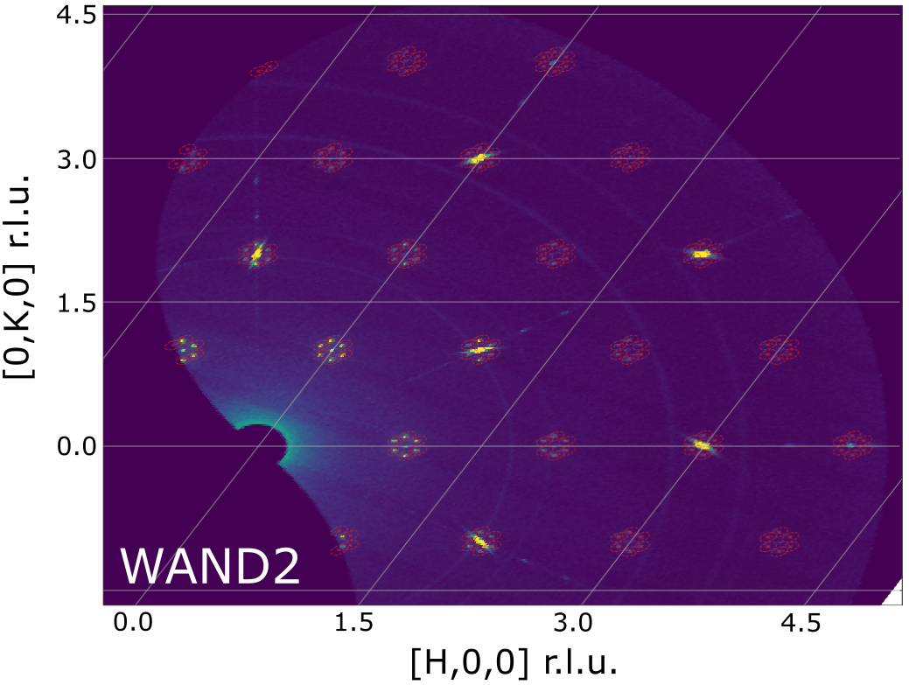

Diffraction Changes#
Powder Diffraction#
New features#
The ConvertUnits algorithm has been extended to use a calibration when converting between d spacing, momentum transfer and TOF. A calibration can be loaded into a workspace using a new ApplyDiffCal algorithm and then viewed in the Show Detectors screen. The calibration consists of the diffractometer constants DIFA, DIFC and TZERO that determine the form of the quadratic relationship between d spacing and TOF. This functionality was previously only available in
AlignDetectorswhich only performed the conversion in the direction TOF to d spacing. This change will provide several benefits:Allow the user to choose the calibration to use when converting focused data from d-spacing to TOF
Improved integration with GSAS e.g. both the calibration and the data will be loaded from GSAS files when running the algorithm LoadGSS and subsequent unit conversions will respect the calibration
Make the unit conversions based on a calibration more accessible in the main ConvertUnits algorithm
PDCalibration now supports workspaces with grouped detectors (i.e. more than one detector per spectrum).
New diagnostic plotting tools:
Calibration.tofpd..diagnostics.plot2d which adds markers for expected peak positions.
Calibration.tofpd.diagnostics.difc_plot2d which plots the change in DIFC between two instrument calibrations.
Calibration.tofpd.diagnostics.plot_peakd which plots the d-spacing relative strain of peak positions.
Calibration.tofpd.diagnostics.plot_corr which plots the Pearson correlation coefficient for time-of-flight and d-spacing for each detector.
Calibration.tofpd.diagnostics.plot_peak_info which plots fitted peak parameters for instrument banks.
New algorithm IndirectILLReductionDIFF to reduce Doppler diffraction data for ILL’s IN16B instrument.
SNSPowderReduction has additional property,
DeltaRagged, which allows using RebinRagged to bin each spectrum differently.A new caching feature is added to SNSPowderReduction to speed up calculation using same sample and container.
New property CleanCache in algorithm SNSPowderReduction.
Including three options for “cache directory” and one for “clean cache” in the Advanced Setup tab of the SNS Powder Reduction interface.
Improvements#
New motor convention for HB2A implemented in HB2AReduce.
FitPeaks can now fit multiple peaks in the same spectrum with a BackToBackExponential starting from user specified parameters.
PDCalibration now initialises the parameters A,B and S of the BackToBackExponential function if corresponding coefficients are in the instrument parameter.xml file.
Support for fitting diffractometer constants with chi-squared cost function in PDCalibration.
SNSPowderReduction now checks if a previous container was created using the same method before reusing it.
A differential evolution minimizer was added to AlignComponents.
A differential evolution minimizer was added to CorelliPowderCalibrationCreate.
Added option to fix banks’ vertical coordinate in CorelliPowderCalibrationCreate.
Loading a CORELLI tube calibration also returns a
MaskWorkspace.AlignComponents has option to output a table listing the changes in position and orientation for each component
CorelliPowderCalibrationCreate now outputs a table listing the changes in position and orientation for each bank
PolDiffILLReduction now outputs flipping ratios along with polarisation corrections.
WANDPowderReduction GUI now only shows relevant items in drop down menu and no longer has a confusing copy input workspace name button.
Bugfixes#
Use the correct version of exponential integral (i.e., the E1 function) in peak profile function Bk2BkExpConvPV so it can be evaluated properly.
Fix the issue with SNS Powder Reduction interface when multiple run numbers are provided and separated with comma.
Fix an issue when saving reduced data as GSAS format using HB2AReduce.
Fix the format inconsistency (with data saved from autoreduction workflow) issue for saving GSAS data using HB2AReduce - both are now using SaveGSSCW for saving GSAS data.
Fix out-of-range bug in FitPeaks for histogram data.
Fix bug in FitPeaks not correctly checking right window for an individual peak.
Fix CalculatePlaczekSelfScattering calculation of mass term for multiple-element materials
Fix bug to implement intended sequential fit of DIFC, DIFA, TZERO in PDCalibration.
Correct unit to TOF for
_tof_xyefiles output for PEARL, when the focusing mode is set to all.Allow a different number of spectra for absorption correction division of PEARL data. This allows
create_vanadiumto work for a non-standard dataset.Saved filenames for summed empty workspaces now include spline properties to avoid long_mode confusion when focussing.
Fix segmentation violation issues for ILL instruments D1B, D2B, and D20, caused by change of scanned data type
D7AbsoluteCrossSections fixed the wrong assumption on the order of spin-flip and non-spin-flip data, and fixed the relative normalisation issues.
Fix crashing issue in AlignAndFocusPowder due to using new unit conversion APIs.
Support for data with x-axis unit of TOF has been deprecated in DiffractionFocussing version 2, please use GroupDetectors instead.
Fixed an error in the final calculation for the PEARLTransVoigt function, used in PEARLTransfit
Engineering Diffraction#
New features#
New IDF for upgraded VULCAN instrument
Improvements#
BackToBackExponential coefficients for A,B and S now read from .xml file and output to .prm file for GSAS-II.
The Engineering Diffraction interface can now be saved as part of a project file, and can save/restore in the event of a crash as part of the general project save system.
Bugfixes#
Engineering diffraction interface now converts fitted TOF centre to d-spacing using diffractometer constants post sequential fit (in a matrix workspace).
Error on the fitted peak centre converted from TOF to d-spacing will now be correct for non-zero difa in the Engineering diffraction interface.
Added checks for the existence of non-zero proton charge before attempting to average log values weighted by proton charge in the fitting tab of the engineering diffraction interface.
EnggFocus algorithm doesn’t attempt to normalise by current if the run has no proton charge and will not throw an error (but will print a warning to the log).
Single Crystal Diffraction#
New features#
New version of algorithm SCDCalibratePanels provides more accurate calibration results for CORELLI instrument.
Modified some logs in output workspace from LoadWANDSCD to be TimeSeriesProperty so they work with SetGoniometer.
IntegratePeaksMD has option to integrate ellipsoids around estimated centroid instead of nominal position.
IntegratePeaksMD has option to determine ellipsoid covariance iteratively and to use the estimated standard deviation rather than scale the major axis of the ellipsoid to the spherical radius.
Algorithms ConvertWANDSCDtoQ and ConvertHFIRSCDtoMDE have a new geometrical correction factor ObliquityParallaxCoefficient for shift in vertical beam position due to wide beam.
TransformHKL has new keyword argument FindError allowing the lattice parameter error calculation to be skipped. This can be used to transform HKL of a peaks workspace without enough peaks to do an optimization so they are simply set to zero.
Added new detector to MANDI instrument geometry with updated calibration. Valid-to dates changed in previous files
MANDI_Definition_2020_04_01.xmlandMANDI_Parameters_2020_04_01.xml. Valid-from dates changed in newly added filesMANDI_Definition_2021_02_01.xmlandMANDI_Parameters_2021_02_01.xml.
LeanElasticPeak#
A new Peak concept has been create, a LeanElasticPeak where the instrument is not included as part of Peak. The only requirement for this peak is a Q-sample vector. There are a number of modifications made to facilitate this. The new LeanElasticPeak and LeanElasticPeakWorkspace concept is show in detail at LeanElasticPeaksWorkspace
{kind=link}

CreatePeaksWorkspace has been modified to optionally create a
LeanElasticPeaksWorkspace.FindPeaksMD has been modified to optionally create a
LeanElasticPeaksWorkspace.PredictPeaks has been modified to optionally create a
LeanElasticPeaksWorkspace.PredictSatellitePeaks will work with
LeanElasticPeaksWorkspace.New algorithm HFIRCalculateGoniometer allows the goniometer to be found for constant wavelength peaks after creation, works with
LeanElasticPeaksWorkspace.These following other algorithms have either been made to work or confirmed to already work with the LeanElasticPeak:
FindUBUsingMinMaxD
Improvements#
Added option to IntegratePeaksMD to stop masking the first and last tubes of each bank (masked pixels are used to determine whether the integration region of a peak is near the edge of the detector). Previously adjacent tubes on adjacent banks were masked which are not always to be considered edges (e.g. on WISH). A custom masking can be applied to the peak workspace (e.g. using MaskBTP) prior to integration to denote detector edges.
IntegratePeaksMD now allows ellipsoidal shapes to be manually defined for the PeakRadius and Background radii options.
The IntegratePeaksMD input dialog has been reorganised to present the many input properties in a more user-friendly manner.
IntegrateEllipsoids calculates intensity for satellite peaks with fractional HKL.
SCDCalibratePanels can optionally update the attached UB matrix with given lattice constants.
FilterPeaks can select banks in addition to filtering by values.
FindPeaksMD has been modified to make use of the multiple goniometers add to Run and goniometerIndex add to MDEvents.
HB3APredictPeaks can now predict satellite peaks for DEMAND data.
MDNorm algorithm can now efficiently process background.
method
IPeaksWorkspace.addPeak(V3D, SpecialCoordinateSystem)exposed to the python interface.
Bugfixes#
Correctly format FullProf files in SaveReflections: there is now a title line and two rows per modulation vector in the header; the multiplicity of a reflection is by default 1.
SaveReflections now determines the parent HKL of a satellite correctly, previously the satellite HKL was rounded.
PredictPeaks no longer segfaults when the instrument of the input workspace doesn’t have the sample position set.
SCDCalibratePanels no longer returns null calibration outputs.
Fix failure in HB3AFindPeaks when switching to crystallographic convention.
Make ConvertWANDSCDtoQ aware of k convention.
Output of ConvertQtoHKLMDHisto now accommodates zoom in slice viewer, as a result this algorithm will now drop the connection to the original workspace